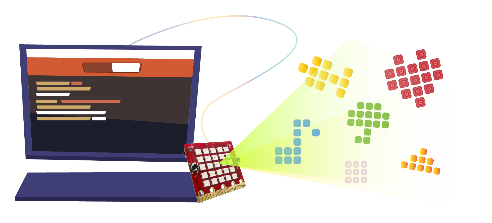
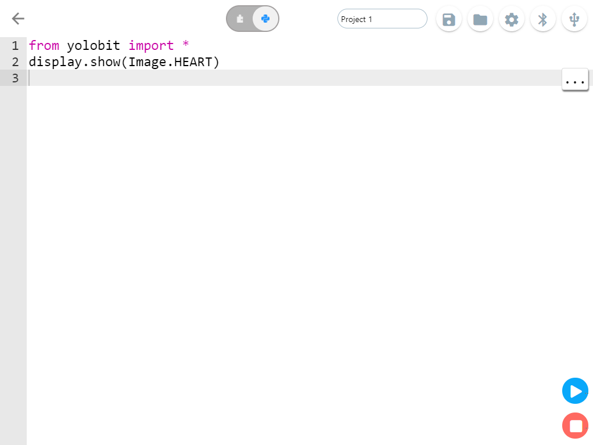
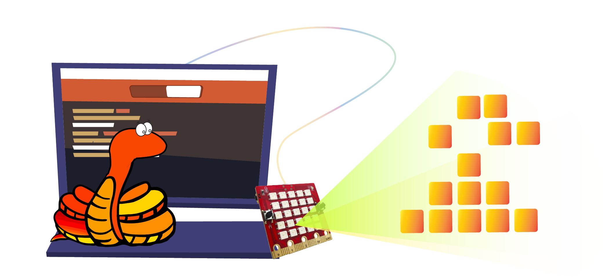
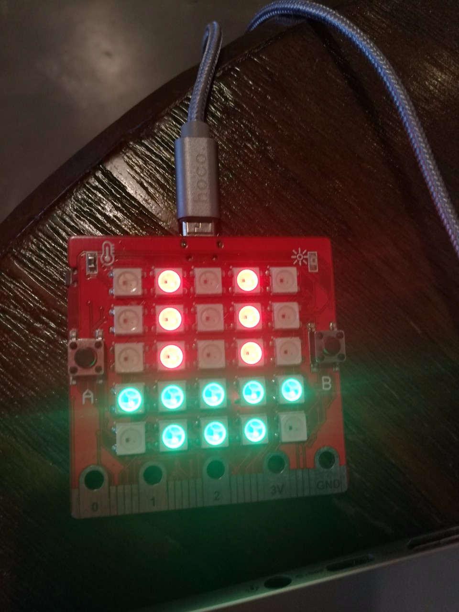

Hình ảnh¶
Tuy Yolo:Bit chỉ có màn hình Led 5×5 nhưng chúng ta có thể làm rất nhiều thứ với nó bằng MicroPython nhé, đặc biệt là hiện ra các hình ảnh vui.
{kind=link}
MicroPython trên Yolo:Bit đi kèm rất nhiều các hình ảnh có sẵn để sử dụng. Ví dụ để hiện ra khuôn mặt cười, bạn có thể dùng các lệnh sau:
from yolobit import *
display.show(Image.HAPPY)
Dòng lệnh đầu tiên thì hẳn là bạn vẫn còn nhớ phần giải thích trong bài trước. Dòng lệnh thứ hai dùng hàm show của đối tượng display để hiện ra một hình ảnh (Image) tên là HAPPY (hạnh phúc).
Bạn hãy thử copy 2 dòng lệnh trên và chạy thử trên Yolo:Bit xem coi có mặt cười nào trên màn hình Led không nhé.
{kind=link}
Ngoài Image.HAPPY ra, thư viện display còn rất nhiều các hình ảnh khác như là:
Image.HEART
Image.HEART_SMALL
Image.HAPPY
Image.SMILE
Image.SAD
Image.CONFUSED
Image.ANGRY
Image.ASLEEP
Image.SURPRISED
Image.SILLY
Image.FABULOUS
Image.MEH
Image.YES
Image.NO
Image.CLOCK12, Image.CLOCK11, Image.CLOCK10, Image.CLOCK9, Image.CLOCK8, Image.CLOCK7, Image.CLOCK6, Image.CLOCK5, Image.CLOCK4, Image.CLOCK3, Image.CLOCK2, Image.CLOCK1
Image.ARROW_N, Image.ARROW_NE, Image.ARROW_E, Image.ARROW_SE, Image.ARROW_S, Image.ARROW_SW, Image.ARROW_W, Image.ARROW_NW
Image.TRIANGLE
Image.TRIANGLE_LEFT
Image.CHESSBOARD
Image.DIAMOND
Image.DIAMOND_SMALL
Image.SQUARE
Image.SQUARE_SMALL
Image.RABBIT
Image.COW
Image.MUSIC_CROTCHET
Image.MUSIC_QUAVER
Image.MUSIC_QUAVERS
Image.PITCHFORK
Image.XMAS
Image.PACMAN
Image.TARGET
Image.TSHIRT
Image.ROLLERSKATE
Image.DUCK
Image.HOUSE
Image.TORTOISE
Image.BUTTERFLY
Image.STICKFIGURE
Image.GHOST
Image.SWORD
Image.GIRAFFE
Image.SKULL
Image.UMBRELLA
Image.SNAKE
Bạn hãy thử sửa chương trình trên và thay Image.HAPPY thành một hình ảnh khác tùy ý muốn và quan sát xem chúng trông thế nào.
Hình ảnh tùy ý
Ngoài các hình ảnh có sẵn, bạn cũng có thể tự vẽ hình ảnh tùy ý của riêng mình. Rất dễ nhé.
{kind=link}
Mỗi đèn LED trên màn hình Led 5×5 có thể nhận 1 trong 9 giá trị, từ 0 đến 8 với các màu tương ứng như sau:
0-Tắt, 1-Đỏ, 2-Cam, 3-Vàng, 4-Xanh lá cây (lục), 5-Xanh dương (lam), 6-Chàm, 7-Tím, 8-Trắng
Dựa trên đó, bạn thử hiện ra một hình theo ý mình, ví dụ như sau:
from yolobit import *
boat = Image(“01010:”
“01010:”
“01010:”
“44444:”
“04440”)
display.show(boat)
Bạn tưởng tượng được ra hình gì không nhỉ? Bạn thử chạy chương trình này và quan sát sẽ thấy màn hình Led hiện ra hình một con thuyền màu xanh lá cây với 2 cột buồm màu đỏ.
{kind=link}
Hãy tìm hiểu thử các lệnh trong chương trình ở trên nào. Chúng ta bỏ qua dòng lệnh quen thuộc đầu tiên. Dòng lệnh tiếp theo khai báo một đối tượng hình ảnh và đặt tên là boat (con thuyền). Bên trong giữa 2 dấu ngoặc tròn () là khai báo hình ảnh con thuyền bao gồm 5 dòng cho 5 hàng Led. Các số bên trong mỗi hàng là màu của từng Led. Các hàng cách nhau bởi dấu hai chấm :.
Thật là đơn giản phải không? Bạn cũng có thể khai báo màu cho các Led trên cùng một hàng như sau:
boat = Image(“01010:01010:01010:44444:04440”)
Hoạt hình
Ngoài hiện ra hình ảnh tĩnh ra, chúng ta hãy thử làm một thứ thú vị hơn, đó là hoạt hình, tức là hiện ra nhiều hình ảnh khác nhau liên tục, thay vì chỉ một hình. Trong MicroPython, chúng ta sẽ dùng một danh sách (list) các hình.
Ví dụ chúng ta có một danh sách các thứ cần phải mua sắm:
Eggs
Shoes
Tomatoes
Để tạo danh sách trong Python, chúng ta dùng lệnh sau:
shopping = [“Eggs”, “Shoes”, “Tomatoes”]
Trong danh sách được đặt tên là shopping ở trên có 3 thứ, gọi là phần tử. Python hiểu được chúng ta đang muốn tạo ra một danh sách bởi vì chúng được đặt trong 2 dấu ngoặc vuông [ ]. Các thứ trong danh sách được phân cách nhau bởi dấu phẩy và các thứ này là 3 dòng chữ do chúng được đặt trong 2 dấu nháy kép “ ”.
Ngoài ra bạn có thể chứa bất kỳ thứ gì trong một danh sách. Ví dụ bạn có thể tạo ra một danh sách các số lẻ như sau:
odds = [1, 3, 5, 7, 9, 11, 13, 15]
Vì là các số nên chúng ta không dùng dấu nháy kép bọc giữa các phần tử.
Bạn cũng có thể trộn lẫn các loại phần tử khác nhau như số, chữ và cả hình ảnh.
mixed_list = [“hello!”, 10, Image.HAPPY]
Bằng cách dùng danh sách, bạn có thể yêu cầu MicroPython hiện ra các hình ảnh khác nhau liên tục. Thư viện hình ảnh của Yolo:Bit đã cung cấp sẵn cho chúng ta một danh sách các hình ảnh, là Image.ALL_CLOCKS chứa các hình của 12 giờ và Image.ALL_ARROWS chứa hình các mũi tên của 8 hướng. Hãy thử viết chương trình hiện chúng ra xem sao nào:
from yolobit import *
display.show(Image.ALL_CLOCKS, delay=200)
Sau khi chạy chương trình, bạn sẽ thấy hình kim đồng hồ xoay 1 vòng giống như 1 hình ảnh hoạt hình phải không nào.
Câu lệnh display.show ngoài việc hiện ra 1 hình ảnh, bạn cũng có thể truyền vào 1 danh sách các hình để hiện ra lần lượt, và mỗi hình các nhau 1 khoảng thời gian được khai báo trong tham số delay là 200 milli giây (tức là 0.2 giây).
Bạn hãy thử chiếu một danh sách các hình theo ý mình, ví dụ như dưới đây:
from yolobit import *
boat1 = Image(“01010:”
“01010:”
“01010:”
“44444:”
“04440”)
boat2 = Image(“00000:”
“01010:”
“01010:”
“01010:”
“44444”)
boat3 = Image(“00000:”
“00000:”
“01010:”
“01010:”
“01010”)
boat4 = Image(“00000:”
“00000:”
“00000:”
“01010:”
“01010”)
boat5 = Image(“00000:”
“00000:”
“00000:”
“00000:”
“01010”)
boat6 = Image(“00000:”
“00000:”
“00000:”
“00000:”
“00000”)
all_boats = [boat1, boat2, boat3, boat4, boat5, boat6]
display.show(all_boats, delay=500)
Một đoạn code rất dài phải không nào, tuy nhiên nó không phức tạp lắm đâu. Hãy cùng xem nó làm gì nào:
Đầu tiên chúng ta tạo ra 6 hình ảnh của con thuyền đặt tên từ boat1 đến boat6 như phần tạo ra hình ảnh ở đầu bài này. Sau đó ta cho hết chúng vào một danh sách đặt tên là boats. Cuối cùng chúng ta dùng lệnh display.show để lần lượt hiện ra các hình cách nhau 500 milli giây (nửa giây) Làm hoạt hình MicroPython thật dễ phải không nào? Bạn hãy thử tạo ra các hình ảnh hoạt họa sáng tạo khác nhé.